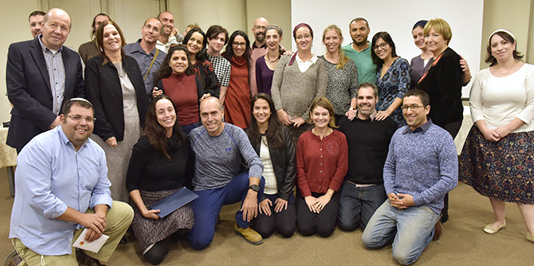

On November 3, 2016, the 21 fellows who began the Mandel Program for Local Leadership in Beer Sheva in September 2014 and their families gathered to mark their graduation from the program. The ceremony – with its speeches, certificates, and musical interludes – marked the transition of the fellows from program participants to Mandel graduates.
The two deputy mayors of Beer Sheva,
Dr. Hefzi Zohar and
Mr. Tal El-Al, both of whom are graduates of the Mandel School for Educational Leadership, spoke movingly of the importance of the Mandel program in Beer Sheva and of the municipality’s strong desire to work in partnership with its graduates.
Moshe Vidgor, the director general of the Mandel Foundation–Israel, noted the range of important subjects that the graduates addressed in their studies and projects, and the positive change they bring to the Negev.
The leadership of the Mandel Center for Leadership in the Negev –
Dr. Adi Nir-Sagi, the director of the center, and
Dr. Smader Ben Asher and
Mr. Israel Sorek, the two program directors – stressed the importance of hope, courage, and optimism for successful leadership.
Dr. Adi Nir-Sagi emphasized the importance of “seeing the future,” which involves a combination of imagination and a clear-sighted view of reality. As an example, she cited the poet Erez Biton, who wrote about “seeing” the desert despite the fact that he is blind. This is what is required of leaders too: in order to make a better world, sometimes they see what is there, and sometimes they must imagine what could be.
In their addresses, the two program directors each related to a very different literary figure: Dr. Smadar Ben-Asher used Dr. Seuss’s Oh, the Places You’ll Go! as the title of her speech, while Israel Sorek spoke in praise of Don Quixote.
Speaking on behalf of the fellows, graduate Netta Schramm described her efforts to develop a code of ethics for early childhood, which is her project for the program. Like all the other speakers, she extended warm thanks, to Mr. Morton Mandel, chairman of the Mandel Foundation; Professor Jehuda Reinharz, president of the Foundation; Mr. Moshe Vigdor, the director general of the Mandel Foundation–Israel; and the members of faculty and administrative staff of the Mandel Center for Leadership in the Negev.

{kind=link}